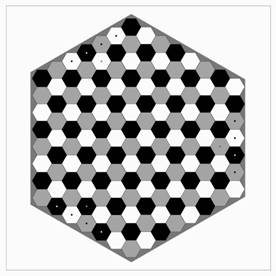
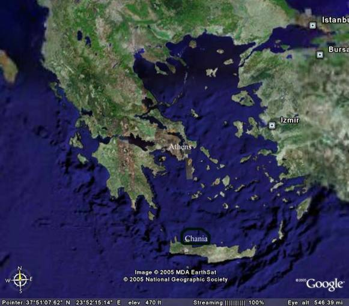
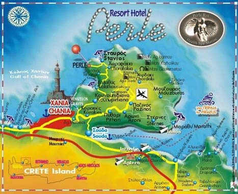
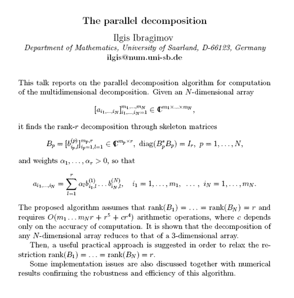
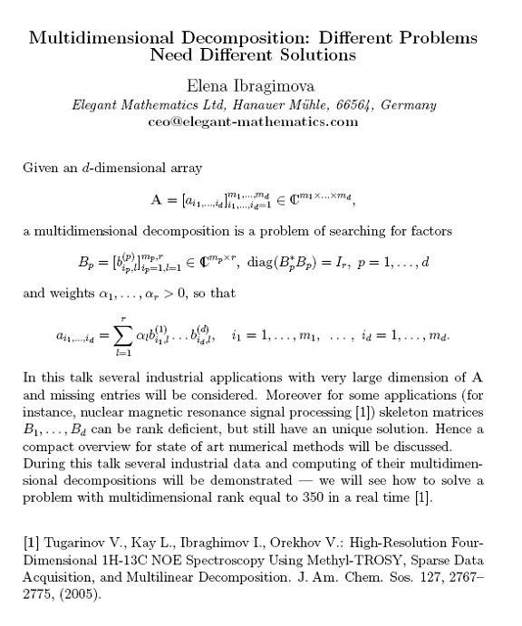

TRICAP 2006
ThRee-way methods In Chemistry And Psychology
… among other things
A cross-disciplinary conference on three-way analysis
Perle Roi Resort & Spa
Stavros Akrotiriou, Chania –
Sun. June 4, 2006 - Fri. June 9, 2006

Three-way chess board
Rasmus Bro rasmus@optimax.dk
Richard A. Harshman harshman@uwo.ca
Henk Kiers h.a.l.kiers@ppsw.rug.nl
Lieven DeLathauwer Lieven.DeLathauwer@ensea.fr
Age Smilde, SMILDE@voeding.tno.nl
Pieter Kroonenberg, kroonenb@fsw.LeidenUniv.nl
Barry M.Wise bmw@eigenvector.com
Eva Ceulemans Eva.Ceulemans@psy.kuleuven.ac.be
Roma Tauler, rtaqam@iiqab.csic.es
Bill Rayens rayens@uky.edu
Nikos Sidiropoulos nikos@telecom.tuc.gr
Evrim Acar,
Andre de Almeida, I3S/CNRS/UNSA, FR
Brett W. Bader, Sandia National Labs,
J.M.F. ten Berge,
Rasmus Bro, KVL, DK
Heather Bush,
Pierre Comon, Univ. Nice, France
Lieven De Lathauwer, KU Leuven, BE
Mohamed Hanafi, ENITIA, FR
Richard A. Harshman, Univ.
Ilgis Ibragimov,
Univ.
Elena Ibragimova, Elegant Mathematics, DE
Henk Kiers, Univ.
Tamara Kolda, Sandia National
Labs,
Theodora Kourti,
Pieter Kroonenberg,
Riccardo Leardi, Univ. Genova, IT
Iven van Mechelen, KU Leuven, BE
Morton Morup, DTU, DK
Pentti Paatero,
Univ.
Sarah C. Rutan, Virginia
Commonwealth Univ.,
Nikos Sidiropoulos, TUC, GR
Alwin Stegeman,
Univ.
Hong Sungjin,
Univ.
Paul Taylor,
Roma Tauler, CSIC,
Marieke Timmerman, Univ.
Giorgio Tomasi, KVL, DK
Alex O. Vasilescu,
Barry M.Wise,
Where: Perle Roi Resort, Stavros Akrotiriou, Chania –


The picturesque town of
Photo of the old Venetian harbor, Chania -
and Olympic airlines http://www.olympicairlines.com
offer service. Flight time is 45 minutes from
TRICAP2003, June 22-27, 2003,
TRICAP2000: July 18-21, 2000,
TRICAP97: May 4-9, 1997,
AIM Workshop on Tensor Decompositions, http://csmr.ca.sandia.gov/~tgkolda/tdw2004/
SIAM-CNRS Workshop on Tensor Decomposition and Applications, http://www.etis.ensea.fr/~wtda/
Go to: http://three-mode.leidenuniv.nl/
Click on: Conference photos (or conference photographs)
Choose Tricap 2006
type password in the space
provided; click on submit (do not use return)
Off you go. Thumbnails are clickable. Large high resolution pictures may be requested from: kroonenb@fsw.leidenuniv.nl
Technical & Social
Program
Sunday, June 4, 2006
·
Optional pre-conference day trip to Knossos
Minoan palace & archeological museum
of Herakleion, for those that arrive on Saturday, June 3. Depart around 8am Sunday
morning; return around 6pm Sunday evening.
·
Conference starts:
Welcome reception & dinner @
8:00pm (all activities at Perle Roi resort, unless
otherwise
noted)
Monday, June 5, 2006
8:00-9:00: Registration
9:15-9:30: Welcome & opening remarks:
1. Michael Paterakis, Associate Dean, TUC;
2. Nikos Sidiropoulos
Session: Applications
& Exploratory Data Analysis (session chair: Rasmus
Bro)
9:30am-10:20am:
Brett W. Bader, Richard A. Harshman, Tamara G. Kolda
Improvements to Three-way DEDICOM for
Applications in Social Network Analysis slides
10:20am-10:40am: Coffee break
10:40am-11:30am:
Barry Wise (+ Dora Kourti)
Re-fitting PCA, MPCA and PARAFAC Models to
Incomplete Data Records slides
11:40am-12:30pm: Sarah E. G. Porter, Sarah C. Rutan, Dwight R. Stoll, Peter W. Carr and Jerry D. Cohen,
Multi-way Analysis of 2D Liquid
Chromatographic Metabolomics Data slides
12:45pm-2:00pm: Lunch
Session: Models
– I (session chair: Lieven de Lathauwer)
2:00pm- 2:50pm: Rasmus Bro,
Less Used but Useful slides
3:00pm- 3:50am: André L. F. de Almeida, Gérard Favier, João C. M. Mota,
The
block-PARAFAC decomposition slides
3:50pm- 4:10pm: Coffee break
4:10pm- 5:00pm: Iven Van Mechelen, Eva Ceulemans, and Jan Schepers,
The family of hierarchical classes models: A state-of-the-art overview slides
5:10pm- 6:00pm: M.
Alex O. Vasilescu,
Incremental Multilinear
SVD
6:00pm-8:30pm: Leisure time
8:30pm: Dinner
Tuesday, June 6, 2006
Session: Theory
& Algorithms (session chair: Henk Kiers)
8:30am- 9:20am: Jos M.F. ten Berge,
Typical rank when the arrays have symmetric slices,
and the Carroll-Chang conjecture of equal CP components slides
9:30am-10:20am: Alwin Stegeman,
Why do degenerate solutions occur in Candecomp/Parafac? slides
10:20am-10:40am: Coffee break
10:40am-11:30am:
Giorgio Tomasi,
Recent developments in fast algorithms for
fitting the PARAFAC model slides
11:40am-12:30pm: Slot
open for discussion
12:45pm-2:00pm: Lunch
Session: Exploratory
Data Analysis (session chair: Richard A. Harshman)
2:00pm- 2:50pm: Tamara G. Kolda,
Multilinear algebra for analyzing data with multiple linkages slides
3:00pm- 3:50am: Romà Tauler,
Including trilinear
and restricted Tucker3 models as a constraint in Multivariate Curve
Resolution Alternating Least Squares method
slides
3:50pm- 4:10pm: Coffee break
4:10pm- 5:00pm: Henk A.L. Kiers & Eva Ceulemans,
Choosing the numbers of components in
three-way component models slides
5:10pm- 6:00pm: Riccardo Leardi,
How to convince people that 3-way PCA is useful
and easy slides
6:00pm-7:30pm: Leisure time
7:30pm: Bus
leaves for dinner @ Monastery restaurant at the old Venetian harbor, downtown
(return
to hotel around 11:30 pm)
Wednesday, June 7, 2006
Session: Theory
/ Uniqueness (session chair: Jos ten Berge)
8:30am- 9:20am: Alwin Stegeman & Nikos Sidiropoulos,
Kruskal's uniqueness condition for the Candecomp/Parafac decomposition slides
9:30am-10:20am:
Pierre Comon, Lek-Heng Lim, Bernard Mourrain
Generic properties of symmetric tensors slides
10:20am-10:40am: Coffee break
10:40am-11:30am:
Heather Bush, Bill Rayens
Khatri-Rao products and conditions for the uniqueness
of PARAFAC
solutions for IxJxK arrays slides
11:40am-12:30pm: Lieven de Lathauwer,
The decomposition in block terms slides
12:45pm-2:00pm: Lunch
2:30pm: Bus
leaves for half-day trip to Elafonisos (“Deer island”) beach on SW corner of
Dinner @ Elos
village, on the way back
(return
to the hotel around 11:00pm)
Thursday, June 8, 2006
Session: Statistical
Theory & Method (session chair: Pierre Comon)
8:30am- 9:20am: Marieke E. Timmerman, Henk
A.L. Kiers, Age K. Smilde, Cajo
J.F. ter Braak,
Bootstrap Confidence Intervals in Variants
of Component Analysis slides
9:30am-10:20am: Pieter M. Kroonenberg,
Multiple imputation
in three-mode analysis: A research program slides
10:20am-10:40am: Coffee break
10:40am-11:30am:
Pentti Paatero,
Estimating and minimizing uncertainty in factor
analytic results, both in 2-way and in 3-way models slides
Session: Models
– II (session chair: Barry Wise)
11:40am-12:30am: Richard A. Harshman,
Generalization of Parafac
and Tucker models to Canonical Correlation models slides
12:45pm-2:00pm: Lunch
2:00pm- 2:50pm: Morten Mørup,
Convolutive PARAFAC Models and Applications slides
3:00pm- 3:50am: Sungjin Hong
Hidden Parafac2 slides
3:50pm- 4:10pm: Coffee break
4:10pm- 5:00pm: Mohamed
Hanafi,
PLS Path Modelling: Computation of latent variables with the estimation
mode B slides
6:00pm-7:30pm: Leisure time
7:30pm- 8:15pm: Special! -- Dinnertime feature by Pieter Kroonenberg:
Three-mode analysis for Dummies and some history of the Tucker model address
8:30pm: Dinner & discussion: TRICAP2009
Friday, June 9, 2006
Session: Algorithms
(session chair: Pieter Kroonenberg)
8:30am- 9:20am: Ilgis Ibragimov,
The parallel decomposition
9:30am-10:20am: Elena Ibragimova,
Multidimensional decomposition: Different
problems need different solutions
10:20am-10:40am: Coffee break
10:40am-11:30am: Chair’s report, and decision regarding TRICAP2009 (… winner is … RomaTauler! - rtaqam@iiqab.csic.es)
12:45pm-2:00pm: Lunch & Farewell: conference ends
Abstracts
Improvements to Three-way DEDICOM for Applications in Social Network Analysis
Brett W. Bader, Sandia Labs,
Richard Harshman, Univ.
Tamara G. Kolda, Sandia Labs,
This presentation revisits the DEDICOM (DEcomposition
into Directional COMponents) family of models and
applies them to new applications in data mining, in particular social network
analysis. The DEDICOM model is a
tool developed in the late 1970's for analyzing asymmetric relationships in
data analysis and has been revisited in the multiway
community over the years. In this
work we present an improved algorithm for computing the 3-way DEDICOM model,
including modifications that make it possible to handle large, sparse data
matrices. Then we will demonstrate
the capabilities of DEDICOM as a new tool in social network analysis. For an application we consider the email
communications of former Enron employees that were made public, and posted to
the web, by the U.S. Federal Energy Regulatory Commission during its
investigation of Enron. We
represent the Enron email network as a directed graph with edges labeled by
time and construct its corresponding adjacency tensor. Using the three-way DEDICOM model on
this data, we show unique latent relationships that exist between types of
employees and study their communication patterns over time.
Re-fitting PCA, MPCA and PARAFAC Models to Incomplete Data Records
Barry M. Wise
Eigenvector Research, Inc.
Many processes generate multivariate or multiway data sequentially. In calibration mode this is not generally a problem, one just waits until all the data is in, then sets about modelling. Often, particularly in process applications, it is desired to know how well the model represents the incoming data before the complete record is available. Several options have been proposed to deal with this problem. Some of the methods are based on in-filling the missing data so that the models may be applied in the usual way. This approach, however, suffers from all the problems associated with missing data. How does one fill in the record, particularly when the missing parts are systematic, not random? An alternative approach is considered here. Models are fit to partial data records by simply truncating the model loadings to coincide with the available data and fitting the partial factors using a classical least squares (CLS) approach. The estimated scores and residuals are found to converge to those of the entire record quite rapidly in the data sets considered. In fault detection applications the implies that it is often possible to detect a bad batch well before its completion.
Multi-way Analysis of 2D Liquid Chromatographic Metabolomics
Data
Sarah E. G. Portera, Sarah C. Rutana, Dwight R. Stollb,
Peter W. Carrb and Jerry D. Cohenb,
aDepartment of Chemistry, Box 842006, Virginia Commonwealth
University, Richmond, VA 23284-2006, USA, bUniversity
of Minnesota, Minneapolis, MN, 55455, USA
Multi-way data analysis methods are ideally suited for the study of metabolomics data. In this work, we have analyzed 4-way data arising from a 2D liquid chromatography analysis of plant extracts. Diode array detection was used in this instance, but the method is also applicable to mass spectrometric detection. The data are quadrilinear, with the absorbance in mAU units as the dependent variable, and the independent variables being retention on the first dimension column, retention on the second dimension column, UV-visible wavelength, and sample identity. The overall data set was 84 x 263 x 75 x 6 (first dimension, second dimension, wavelength and sample, respectively). As the chemical rank of this data set is on the order of 90, we subdivided the 2D chromatograms and analyzed the data in smaller 4-way sections. The approach that we used included evaluation of the rank of the matricised data in as a function of wavelength, first column retention times and second column retention times. The maximum rank was used for a PARAFAC analysis, with nonnegativity as a constraint using the program of Bro. Further iterations were carried out with an alternating least squares algorithm with a flexible unimodality constraint being applied the chromatographic profiles that did not appear to be associated with a background component. The result from this analysis was used as an initial guess for a final PARAFAC analysis. The results provide the relative concentrations of approximately 70 known and unknown signaling compounds in two wild type and two mutant maize seedlings.
LESS USED BUT USEFUL
Rasmus Bro
This talk describes some methods that are not commonly used in multi-way analysis but which have interesting properties. Multi-way regression is useful in several application areas and there are many ways to implement regression in higher-order analysis. Here it will be shown how partial least squares regression can be extended to and made useful for multi-way data. Another interesting multi-way model is PARAFAC2. This model is very useful in situations where the uniqueness properties of the PARAFAC model is needed, but where the PARAFAC model itself is too strict to adequately model the data. We will show how PARAFAC2 can help overcome problems for several different types of data.
The Block-PARAFAC decomposition
André
L. F. de Almeida, Gérard Favier,
João C. M. Mota
Laboratoire I3S/CNRS/UNSA,
2000,
Route des Lucioles,
06903 Sophia Antipolis, France
We present a block-tensor decomposition that mixes the properties of the Parallel Factor (PARAFAC) and Tucker decompositions. Block-PARAFAC is a decomposition of a third-order tensor into a sum of Q structured PARAFAC blocks. Constrained linear combinations or interactions involving columns of different component matrices are permitted and modeled by means of constraint matrices. It is shown that the Block-PARAFAC decomposition is equivalent to a constrained Block-Tucker3 decomposition with orthogonal unfolded cores. Block-PARAFAC enjoys the so-called between-block uniqueness, which stands for the inherent separability of the Q structured PARAFAC blocks. Different levels of within-block partial uniqueness are possible, depending on the particular constrained interaction structure. Applications of Block-PARAFAC to wireless communication signal processing problems such as blind beamforming and multi-antenna coding have been developed, and will be briefly discussed.
The family of
hierarchical classes models: A state-of-the-art
overview
Iven Van Mechelen, Eva
Ceulemans, and Jan Schepers
Hierarchical
classes models are decomposition models for N-way data, that
can be considered N-way Tucker models, subject to two major modifications: (1)
Component scores for all reduced modes are constrained to be binary, (2) in the
decomposition the Sum operator is replaced by the Max-operator. The first
modification implies that all reduced modes are subject to an overlapping
clustering; the second implies that the models include a representation of
quasi-order (implication-type) relations for all reduced modes, which may be
defined in quite a natural way (provided the core, and therefore the
reconstructed data, take nonnegative values only). Mathematically
speaking, the hierarchical classes family can be considered decomposition
models in the exotic semiring (R^+, max, x). In this
talk, I will present a state-of-the-art overview of the research on
hierarchical classes models and their associated
algorithms. On the level of modeling, this overview will include recent
extensions of the family to models for rating- and real-valued data, and
various types of constrained hierarchical classes
models. On an algorithmic level, simulation results on the performance of
a broad range of estimation procedures will be summarized, including most
recent results on the performance of local search heuristics.
Typical rank when arrays have symmetric
slices, and the Carroll-Chang conjecture of equal CP components
Jos M.F. ten Berge
The question of how many components are needed to decompose a three-way array by Candecomp/Parafac has led to results on typical rank. These imply that, for arrays sampled randomly from a continuous distribution, certain rank values (numbers of components needed for perfect fit) arise with positive probability. In certain applications, like a scalar product fitting problem that arises in the context of INDSCAL, the slices of the array are symmetric. Ten Berge, Sidiropoulos and Rocci (2004) have shown that such arrays tend to have either the same or smaller typical ranks than their asymmetric counterparts. They also showed that CP, upon convergence, has A and B column-wise proportional in a majority of cases. But exceptions also arise with positive probability. In the present paper, some of these results are discussed and extended. It is shown that 2´J´J arrays and 3´2´2 arrays can almost surely be transformed to have symmetric slices, implying that typical ranks for such arrays formats are the same regardless of symmetry of the slices (Ten Berge & Stegeman, in press). Next, the problem of CP-solutions for the INDSCAL-related case is treated. In such cases, A and B are required to be equal. Carroll and Chang (1970) conjectured that the symmetry of the slices will force component matrices A and B to be equal upon convergence. Indeed, when unconstrained CP is applied, we will have A=B in a vast majority of cases. However, exceptions have also been detected. These cases typically involve low k-rank of the third component matrix C. This will be fully explained for 4´3´3 arrays of rank 5 (Ten Berge & Stegeman, in preparation). It will be shown under what conditions such arrays admit low k-rank for C, and how to obtain alternative CP-solutions which do have A and B equal.
Why do degenerate solutions occur in Candecomp/Parafac ?
Alwin Stegeman
The Candecomp/Parafac (CP) model decomposes a three-way array into a prespecified number R of rank-1 arrays and a residual array, in which the sum of squares of the residual array is minimized. The practical use of CP is sometimes complicated by the occurrence of so-called degenerate solutions. In such cases, convergence of the CP algorithm is extremely slow, some components are highly correlated in all three modes and the elements of these components become arbitrarily large. We consider fitting the real-valued CP model to an I×J×K array X which is randomly sampled from an IJK-dimensional continuous distribution. For K = 2, we show for which combinations of I, J and R degenerate solutions may occur and offer a mathematical explanation for this. For K = 3, we consider all known cases in which the random array X has rank q with positive probability, and rank q+1 with positive probability (i.e. X has a two-valued typical rank). We show that if X has rank q+1 and R = q, then degenerate solutions may occur. Again, a mathematical explanation is offered. For the presented cases, degenerate CP solutions occur when the CP objective function does not have a minimum but an infimum. If this holds, then any sequence of feasible CP solutions of which the objective value approaches the infimum, will become degenerate. The underlying “cause” of degeneracy in the presented cases, is the occurrence of a two-valued typical rank. Also, it is shown that CP uniqueness is not necessary for degenerate solutions to occur.
Recent developments in fast algorithms for fitting the PARAFAC model
Giorgio Tomasi
The PARAFAC model is commonly used in chemometrics because of its uniqueness properties and because it corresponds to the physical model of several types of data (e.g. EEM fluorescence or chromatographic data). In spite of its conceptual simplicity, this model has proved to be particularly difficult to fit on real as well as simulated data sets. Several algorithms have been proposed for this purpose, with uneven results. In particular, none of the methods proposed thus far operates well in all conditions. For example the Alternating Least Squares algorithm is slow in case of high collinearity and large fractions of missing values whereas the Levenberg Marquadt algorithm may be too expensive for large problems. In this talk, a number of possibilities based on the Khatri-Rao product are shown that can greatly improve the efficiency of the ALS and all other methods and some possibilities are outlined based on QR decomposition that can be used to compress the array and reduce the computational expense. In particular, a compression will be outlined that reduce the computational complexity to O((I + J + K)F) for a three -way array and is compatible with nonnegativity constraints.
Multilinear algebra for analyzing data with
multiple linkages
Tamara G. Kolda, Sandia National Labs
Abstract: Link analysis typically
focuses on a single type of connection, e.g., two journal
papers are linked because they are written
by the same author. However, often we want to analyze data that has multiple
linkages between objects, e.g., two papers may have the same keywords and one
may cite the other. The goal of this paper is to show that multilinear
algebra provides a tool for multi-link analysis. We analyze five years of
publication data from journals published by the Society for Industrial and
Applied Mathematics. We explore how papers can be grouped in the context of
multiple link types using a tensor to represent all the links between them. A
PARAFAC decomposition on the resulting tensor yields information similar to the
SVD decomposition of a standard adjacency matrix. We show how the PARAFAC
decomposition can be used to understand the structure of the document space and
define paper-paper similarities based on multiple linkages. Examples are
presented where the decomposed tensor data is used to find papers similar to a
body of work (e.g., related by topic or similar to a particular author’s
papers), find related authors using linkages other than explicit co-authorship
or citations, distinguish between papers written by different authors with the
same name, and predict the journal in which a paper was published. (This is
joint work with Daniel M. Dunlavy and W. Philip Kegelmeyer.)
Including trilinear and restricted Tucker3
models as a constraint in Multivariate Curve Resolution Alternating Least
Squares method
Romà Tauler
Department of Environmental Chemistry, IIQAB-CSIC, Jordi
Girona 18-26,
e-mail: rtaqam@iiqab.csic.es
Constrained bilinear models implemented in Multivariate Curve Resolution Alternating Least Squares (MCR-ALS) method have been revealed extremely useful in solving rotational and intensity ambiguities associated to two-way factor analysis problems in different chemistry fields and in spectroscopy. Constraints applied to resolved profiles have included non-negativity, unimodality, closure, selectivity, local rank and physical and chemical laws. These models are easily extended to three-way and multiway data sets arranged in appropriate matrix augmentation (concatenation) schemes (matricization). The bilinear model assumed in MCR-ALS may include additional constraints concerning three-way structures like those implied in PARAFAC and Tucker models. These models may be implemented in the ALS algorithm in a very flexible way covering a wide range of possible situations, including mixed modeling situations where multilinear constraints are only partly fulfilled by the physical nature of the investigated data. Detailed explanation of different implemented algorithms and of possible application will be described and discussed.
Choosing the numbers of components in three-way component models
Henk A.L. Kiers & Eva Ceulemans
One of the main choices to be made
in using three-mode component models is how many components to use. In the last
five years, various new procedures have been proposed for choosing the
number(s) of components for CANDECOMP/PARAFAC, Tucker3, Tucker2, and Tucker1
models. Here an overview will be given of these methods, and some experience
with them in practice will be shown. Notably, the procedures proposed by Bro
and Kiers (2003), Timmerman and Kiers (2000) and Kiers and der
Kinderen (2003) will be described. In addition to choosing
the numbers of components, the data analyst has to choose the particular type
of model to use (e.g., CANDECOMP/ PARAFAC, Tucker3, or Tucker2). Ceulemans & Kiers proposed a procedure that combines
these choices, i.e., that helps choosing among all types of models, and all
sensible numbers of components to be used with these models. This procedure is
an elaboration and variation of the procedure proposed by Kroonenberg
& van der Voort (1987).
Simulation results will be described, as well as some practical experiences,
and problems.
HOW TO CONVINCE PEOPLE
THAT 3-WAY PCA IS USEFUL AND EASY
Riccardo Leardi
Department of Chemistry and Food and
At present, the application of three-way
methods for exploratory analysis and data display is still not as common as it
should be. The main reasons for that are a widespread ignorance of the
multi-way techniques and the generalized feeling that they can be used only by
experts in the field. In order to make them common tools for every people using
chemometrics a big effort should be performed to show
how powerful they can be, even when used at their simplest level. The talk will
present a set of easily understandable examples, taken from different fields,
from which also the non experts in three-way methods can appreciate how
powerful they are. Furthermore, it will be shown how the application of a
simple algorithm removing the sign ambiguity makes the joint interpretation of
the three loading plots absolutely straightforward.
Kruskal's uniqueness condition for the Candecomp/Parafac
decomposition
Alwin Stegeman, Nikos Sidiropoulos
Let X be a real-valued three-way array of order I×J×K. The real-valued Candecomp/Parafac (CP) decomposition is written as X = Y(1) + … + Y(R) + E , where Y(r) are real-valued rank-1 arrays and E is a real-valued rest term. Each rank-1 array Y(r) is defined by the outer product of three vectors a(r) , b(r) and c(r), i.e. . These vectors make up the R columns of the component matrices A (I×R), B (J×R) and C (K×R). If 2R+2 is less than or equal to the sum of the k-ranks of A, B and C, then the fitted part of the decomposition is unique up to a change in the order of the rank-1 arrays Y(r) and rescaling/counterscaling of each triplet of vectors (a(r),b(r),c(r)) forming a rank-1 array. This classical result was shown by Kruskal in 1977. His proof is, however, rather inaccessible and does not seem intuitive. In order to contribute to a better understanding of CP uniqueness, this talk presents an accessible and intuitive proof of Kruskal's condition. The proof is both self-contained and compact and can easily be adapted to the complex-valued CP decomposition.
Generic properties of Symmetric Tensors
Pierre
Comon, Lek-Heng Lim,
Bernard Mourrain
Symmetric tensors are arrays whose entries do not change under any permutation of indices. Note that with this definition, symmetric arrays enjoy more symmetries than in the INDSCAL model where only matrix slices are requested to be symmetric. On the other hand, the advantage is that Symmetric Tensors of order d and dimension N can be bijectively associated with homogeneous polynomials of degree d in N variables. Yet, working with polynomials permits to resort to Algebraic Geometry results. In accordance with PARAFAC/CANDECOMP decomposition framework, a rank-one tensor is defined as the outer product of vectors, and the tensor rank is usually defined as the smallest number of rank-one tensors necessary to achieve a perfect fit. These definitions are assumed throughout the presentation. First, a precise definition of generic and typical ranks is given. This definition is compatible with the terminology previously admitted in the literature (eg. ten Berge). Limiting our discussion to the complex field, we then show that the closure of the sets of tensors of rank r can be ordered by inclusion (cf. Theorem 1). A sub-product of this Theorem, among others, is that the set of tensors of rank at most r is generally not closed, unless r=1. This is quite important, because it means that the problem of approximating a tensor by another of lower rank is an ill-posed problem. It is also pointed out that the generic rank is now known for any pair (d,N). This result can be actually obtained from two rather complicated results published by Alexander and Hirschowitz. One can imagine decomposing symmetric tensors into a sum of non symmetric rank-one terms. Therefore, if each rank-one tensor is constrained to be itself symmetric, the obtained rank could be larger; this rank is called the symmetric rank. We show that in fact the symmetric rank of any symmetric tensor equals its tensor rank (cf. Theorem 2). Lastly, examples are given in order to illustrate the previous results. In particular, a series of rank-2 order-3 tensors converging to a rank-3 limit is exhibited. This kind of example cannot exist for matrices.
KHATRI-RAO PRODUCTS AND CONDITIONS FOR THE UNIQUENESS OF PARAFAC
SOLUTIONS
FOR IxJxK ARRAYS
Heather Bush,
Bill Rayens,
Utilizing Khatri-Rao products to represent the
PARAFAC decomposition, ten Berge and Sidiropoulos’
seminal paper (2002) provided the first evidence for countering the necessity
claim of Kruskal's uniqueness condition, identifying
PARAFAC decompositions that were unique when Kruskal's
condition was not met. Moreover, ten Berge and Sidiropoulos
conjectured that Kruskal’s condition would have
to be supplemented with additional k-rank restrictions if a set of necessary
and sufficient conditions were to be had. In our research, we adopt
a different linear algebraic perspective on this problem and are able to
provide: (1) the answers to lingering questions about the occurrence of
uniqueness for a specific number of columns, (2) evidence that necessity would
require more than a restriction on k-rank, (3) an explanation of uniqueness
beyond k-rank, and (4) an approach that could be extended to cases beyond those
investigated by ten Berge and Sidiropoulos.
The decomposition in block terms
Lieven De Lathauwer1,2
1Department
of Electrical Engineering, Division ESAT-SCD, Katholieke
Universiteit Leuven,
2ETIS
(CNRS, ENSEA, UCP), Centre National de la Recherche Scientifique,
In this talk we introduce a new tensor decomposition. The given tensor 'block' is decomposed in 'blocks of smaller dimensionality'. Several variants of this new decomposition will be presented. PARAFAC and the Tucker model can be considered as special cases. The result sheds new light on very fundamental aspects of tensor algebra, including tensor rank.
Bootstrap Confidence Intervals in Variants of Component Analysis
Marieke E. Timmerman,
Henk A.L. Kiers,
Age K. Smilde,
Cajo J.F. ter Braak, Wageningen University
1Heymans Institute for Psychology (DPMG),Grote
Kruisstraat 2/1, 9712TS
The bootstrap methodology can be used to estimate confidence
intervals (CI’s) for the statistics in a component analysis. We discuss
bootstrap CIs in three types of component analysis,
namely for independent two-way data (Principal Component Analysis (PCA)), for
time-dependent data obtained from replicates within experimental conditions
(Principal Response Curve (PRC) model) and for hierarchically ordered data
(Multilevel Component Analysis (MLCA)). We present an overview of possible strategies for bootstrap
confidence intervals, and pay attention to the resampling
scheme, methods for estimating the CI’s, and possible non-uniqueness of
the estimated parameters. CI estimates using different methods in PCA may
diverge highly. We explain that this results from differences in quality, and
in perspective on the rotational freedom of the population parameters. A
comparative simulation study shows that the bias-corrected and
accelerated (BCa) method for bootstrap
CI’s generally yields CI’s with good coverage properties. Moreover,
the BCa method is more flexible and yields better CIs than its counterparts based on asymptotic standard
errors. The PRC model analyzes multivariate data resulting from
experiments involving repeated sampling in time. The time-dependent treatment
effects are represented by Principal Response Curves (PRCs).
A comparative simulation study shows that confidence bands for PRCs with good coverage can be obtained with BCa intervals using a nonparametric bootstrap,
except for the case of exactly zero population PRCs
for all conditions. Then, the behaviour is irregular.
As will be explained, this is caused by the sign indeterminacy of the PRCs. MLCA analyses multilevel multivariate data. Such
hierarchically ordered data require some particularities in the bootstrap
scheme. The results of a comparative simulation study will be discussed.
Multiple imputation
in three-mode analysis: A research program
Pieter M. Kroonenberg,
Department of Education and Child Studies,
One of the ways to
handle missing data is via multiple imputation, i.e.generating several data sets with differently imputed
values for the missing data. The basic idea is to use generalised
procrustes analysis to evaluate the stability of the
parameters from the multiply imputed data sets. Attention is paid to the
possibilities and impossibilities of using multiple imputation
in three-mode analysis. Much of the research is still in its infancy and
primarily ideas are presented rather than firm results.
Pentti Paatero
Using Bootstrap (BS) for
estimating uncertainty of PCA is discussed by Timmerman et al in TRICAP2006.
For non-negatively constrained 2-way factor analysis, such as PMF, BS is not a
fully satisfactory method because there is usually rotational ambiguity in the
results and customary BS cannot determine rotational ambiguity. Recent (so far, unpublished) results by Paatero, Eberly and Hopke have shown that a combination of BS and random
rotational “forcing” of the computed factors produces reliable
confidence intervals (CI’s) for PMF factor elements. These two-way
results are summarized in this talk. Generalization of this approach to PARAFAC
is discussed: simplified, BS of a 3-way array means that randomly chosen
subsets of slices of the array are analyzed and the variation of results
between different subsets is used for deriving CI’s. Rotational forcing
is effected so that randomly chosen elements of one (or of all) of factor
matrices A, B, or C are “pulled up” (and “pulled down”)
by auxiliary equations that are introduced in the Least-Squares (LS) model.
Paatero and Hopke (2003) have
demonstrated qualitatively that in 2-way factor analysis, such as PCA or PMF,
columns or rows with exceptionally low signal-to-noise (S/N) ratio should be
omitted from the matrix in order to determine weak factors with best possible
resolution. In this talk, quantitative criteria are reported for deciding when
a given low-S/N row or column should be omitted (or downweighted)
or kept in the matrix. These results are new. The criteria are extended to the
Tucker T3 model.
In applications, all rows
(columns) of matrices often possess similar S/N. However, transformations can
be applied so that in the transformed matrix, some rows(columns)
have extremely low S/N and hence should be omitted. Application to factor
analysis of spectroscopy data is discussed as an example: in many spectra,
there are smooth regions between sharp peaks. It is shown that in a smooth
region, a group of adjacent spectral channels should be replaced by the average
of these channels in order to enhance S/N of computed results. This result is
also valid for 3-way models: then a group of adjacent slices is to be replaced
by the average of those slices.
Reference: Pentti Paatero and Philip K. Hopke, Discarding or downweighting high-noise variables in factor analytic models. Analytica Chimica Acta 490 (2003) 277-289.
Generalization of Parafac and Tucker models
to Canonical Correlation models
Tucker and Parafac are methods of “internal relationship analysis”: they find patterns of relations within a single dataset. However, statistical data analysis also uses “external relationship analysis”. External analysis methods find relationships between patterns in one dataset and those in another, or between patterns in a dataset and those in a theoretical logical structure or ``design matrix''. Bro and others have introduced external analysis into the three-way domain by deriving n-way extensions of PLS regression. I have stumbled upon an alternative approach, one that extends the symmetric relation of (canonical) correlation. Canonical correlation finds weights for an optimal linear combination of the columns of one matrix, and weights for an optimal linear combination of the columns of another matrix (the “other side” of the relation) such that the two vectors they define have maximal correlation. This is then repeated for vectors orthogonal to the first set, to get added dimensions of correlation between the two matrices.
In statistics, canonical correlation is used to define the General
Linear Model (GLM). By choice of arguments supplied to the GLM, one can obtain
special cases that encompass a wide range of standard statistical techniques,
including Univariate and Multivariate Analysis of Variance and
Covariance, Discriminant Analysis, Multiple
Regression, analysis of counts and contingency tables, and even the simplest
“special case”, group comparisons via the t-test.
I will describe
an “external analysis” analog of Tucker T3, called TUCCON, and a Parafac-like special case of it called PARACCON, which
provide multilinear generalizations of canonical
correlation and thus of the GLM. This directly leads to multi-way versions of
all the GLM’s ``special-cases'', often
providing the added benefits for these methods that multiway
generalization gives to Factor Analysis. For example: when, on either side of
the canonical relation, there is a higher-way array in which the relevant
patterns have a unique Parafac decomposition, then
there also be a unique decomposition of the dimensions defining the “external relations'' between
the two sides (i.e., of the “canonical space” on each side). Also, the source for patterns on each
side of a canonical relation can now involve more than one dataset per side,
allowing an outer-product synthesis of patterns from several sources on one
side to be related to, say, the outer-product patterns in a single higher-way
array on the other. Estimation of the parameters for TUCCON and PARACCON is
often possible using familiar methods like Alternating Least Squares or Paatero’s Multilinear
Engine. [ I will sometimes need to use the array
notation AIN described in an earlier TRICAP meeting and published in the
``Index Formalism...'' article in Journal of Chemometrics.
Interested colleagues are encouraged to gain some advance familiarity with this
notation —downloadable from http://publish.uwo.ca/~harshman/ainpubl.pdf.]
Convolutive PARAFAC Models and Applications
Morten Mørup
The regular
factor analysis only considers instantaneous mixing, i.e. . However, this analysis can be extended to a non-instantaneous
mixing, i.e. forming the convolutive factor
analysis. Lately, much attention has been given to convolutive
factor analysis models since these models can account for echo effects, i.e.
various forms of time delays from source to sensors. Recently, we’ve
proposed to extend the convolutive factor analysis
model to a model convolutive in both modalities, i.e.
the double convolutive model . Furthermore, the convolutive
factor analysis models also generalize to higher orders forming convolutive PARAFAC models, i.e. CPARAFAC. It will be
demonstrated how CPARAFAC might be useful in the analysis of a wide range of
signals.
Hidden Parafac2
Sungjin Hong
Parafac is a three- and higher-way component model which yields a set of uniquely determined factors under mild conditions. Parafac2, as a variant of Parafac, relaxes the invariance condition of component weights for one of three data modes such that cross-products of component weights in the relaxed mode are invariant instead of the components themselves, also yielding a unique decomposition of n-way data. Parafac2 is suited well to the multiple-groups factor-analytic problems since the relaxed model condition allows for fitting multiple groups of distinctive observational units by reweighted, invariant component loadings. In general, multiple-groups analysis assumes known grouping of observation units. However, it is sometimes very desirable to consider the grouping itself as unknown model parameters to optimize (as in k-means clustering). Unlike a consecutive modeling of data reduction and clustering (e.g., k-means clustering on reduced-dimensional component space), Hidden Parafac2 (HIDPAR2) simultaneously estimates component weights for dimensional reduction and grouping memberships for classification, minimizing a unified fit function. From the mixture-modeling perspective, HIDPAR2 can be considered as a constrained component mixture modeling of two-way data by an (reweighted) invariant component loading pattern and hidden membership. An alternating least squares algorithm is developed for parameter estimation in which group membership is iteratively estimated by a fuzzy k-means step, given all other model parameters. Simulated data are used to assess performance of the algorithm.
PLS Path Modelling:
Computation of latent variables with the estimation mode B
Mohamed Hanafi
ENITIAA-INRA, Unité
de Sensometrie et Chimiometrie - Rue de la Géraudière BP 82225,
44322 Nantes Cedex
PLS Path Modelling shows a number of
interesting advantages over others existing approaches traditionally used for
structural modelling. However, the lack of convergence properties of the existing
iterative procedures for the computation of the latent variables,
has always been considered as one of the major drawbacks. The convergence is
stated only in practice. The present paper shows that when the estimation mode
B is chosen for all blocks, the iterative procedure for the computation of
latent variables proposed by Wold (1985) is monotonically convergent.

